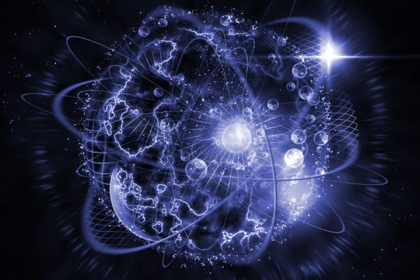
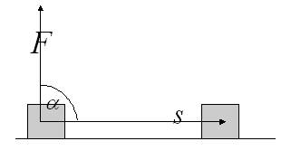
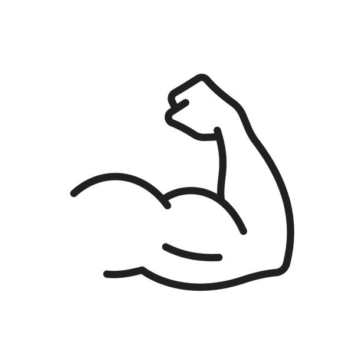
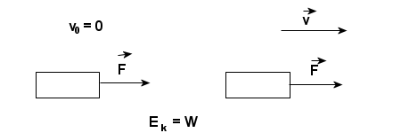
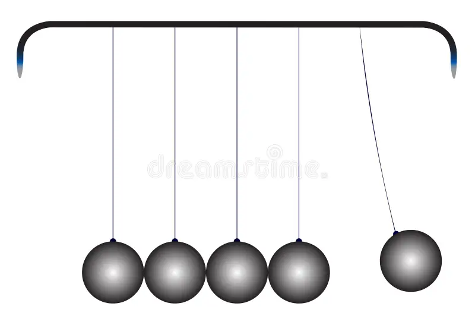
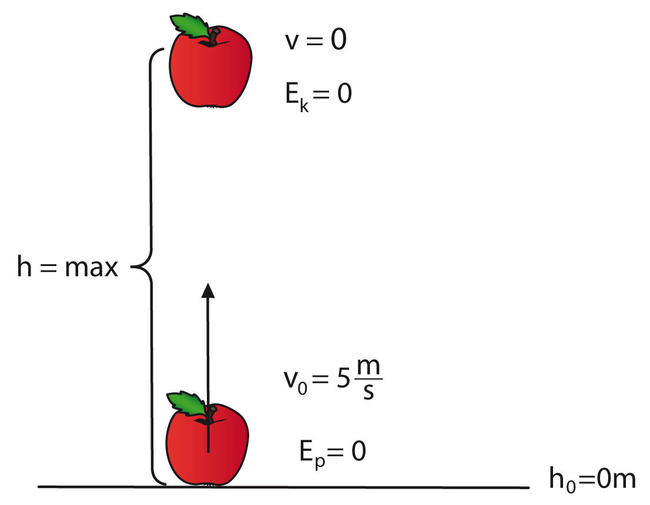

Praca, moc i energia w fizyce
Autorzy: Yevhenii Zhelieznov, Arsenii Siversky
Klasa: 2c

Praca mechaniczna
Praca mechaniczna jest wykonywana wtedy, gdy na ciało działa siła i powoduje jego przemieszczenie w kierunku działania tej siły.
Wzór na pracę mechaniczna:
W = F · s
- W – praca mechaniczna
- F – wartość siły
- s – droga przebyta przez ciało
Jednostką pracy w układzie SI jest dżul (J).

Kiedy praca jest wykonywana
Praca mechaniczna jest wykonywana na przykład wtedy, gdy:
- podnosimy ciężki przedmiot
- pchamy wózek
- ciągniemy skrzynię po podłodze
Praca nie jest wykonywana, gdy:
- ciało się nie przemieszcza
- siła działa prostopadle do kierunku ruchu
Nie każda siła powoduje wykonanie pracy mechanicznej.
Moc
Moc określa, jak szybko wykonywana jest praca mechaniczna. Im większa moc, tym więcej pracy wykonujemy w krótszym czasie.
Wzór na moc:
P = W / t
gdzie:
- P – moc
- W – praca
- t – czas

Jednostką mocy jest wat (W).
Energia
Energia to zdolność do wykonania pracy.
Każde ciało, które może wykonać pracę, posiada energię.

Rodzaje energii:
- energia kinetyczna
- energia potencjalna
- energia elektryczna
- energia cieplna
W fizyce energia i praca mają tę samą jednostkę – dżul (J).
Energia kinetyczna
Energia kinetyczna to energia, którą posiada ciało będące w ruchu.


Wzór na energię kinetyczną:
Ek = (m · v²) / 2
Energia kinetyczna zależy od:
- masy ciała
- prędkości ruchu
Im większa prędkość, tym znacznie większa energia kinetyczna, ponieważ prędkość występuje we wzorze w kwadracie.
Energia potencjalna
Energia potencjalna grawitacji zależy od położenia ciała względem Ziemi.
Wzór:
Ep = m · g · h
gdzie:
- m – masa
- g – przyspieszenie ziemskie
- h – wysokość
Podniesiony przedmiot ma energię potencjalną, która może zamienić się w energię kinetyczną podczas spadania.
Zasada zachowania energii
Zasada zachowania energii mówi, że energia nie może powstać ani zniknąć. Może jedynie zmieniać swoją postać.
Przykład:
Podczas spadania ciała energia potencjalna zamienia się w energię kinetyczną. Suma energii w układzie pozostaje stała.
Zasada ta ma ogromne znaczenie w technice i nauce.
